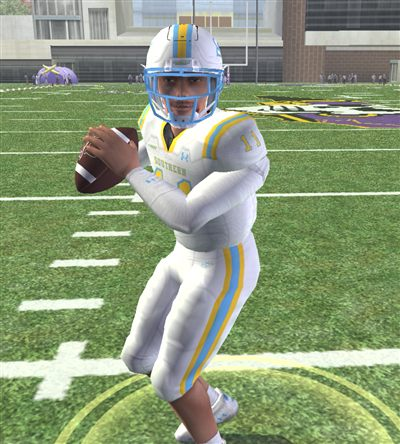
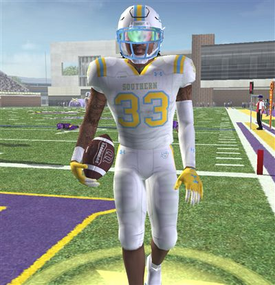

This page tracks the season one episode at a time — a new row goes into the table and a new section gets added to the narrative as each video actually releases, so it's never ahead of the channel. Through two weeks, Southern is 2–0, and the two biggest questions from the preview are splitting in opposite directions: the offense looks exactly as advertised, and the run defense still hasn't been truly tested.
In This Report
- The Season So Far
- Foxworth's Clean Start
- Molinich's Workload
- The Defense: Still Unproven Against The Run
- What's Ahead
- The Takeaway
The Season So Far
| Wk | Opponent | Score | Result |
|---|---|---|---|
| 1 | vs Kentucky | 48–17 | Win ▶ Watch The Episode |
| 2 | vs North Texas | 31–7 | Win ▶ Watch The Episode |
| 3 | at Army | — | |
| 4 | at USF | — | |
| 5 | at ECU | — | |
| 6 | vs Louisiana | — | |
| 7 | at No. 16 Texas | — | |
| 8 | at Navy | — | |
| 9 | Bye | ||
| 10 | at Temple | — | |
| 11 | vs UAB | — | |
| 12 | vs Memphis | — | |
| 13 | vs UTSA | — | |
Both wins came at home, and both came comfortably — a combined 79–24 across the two games. Army is the first real road test of the season, and the first opponent that's actually given this program trouble before: a 59–6 blowout loss at home in 2025, even after Southern won both meetings since.
Foxworth's Clean Start

Foxworth opened the year 21-of-33 for 260 yards and 4 touchdowns against Kentucky, then followed it with a more efficient 13-of-24 for 148 yards and 2 more scores against North Texas. Two games, six total touchdowns, zero interceptions — exactly the sophomore leap the preview flagged as the most likely development-curve pattern in this program's own data.
Molinich's Workload

112 rushing yards and 2 touchdowns against Kentucky, then 226 rushing yards and 2 more against North Texas — 338 yards on the ground through two games, plus 72 receiving yards and 3 receiving touchdowns on top of it. The preview's prediction was a decline toward 1,300–1,500 yards on the season as the offense balances out; this pace, if it held, would blow well past that. Two games is early, but it's the opposite direction the preview expected.
The Defense: Still Unproven Against The Run
The biggest question from the preview — whether the defense's nine-point ratings jump finally moves the run defense out of the national bottom 10 — doesn't have a real answer yet. Both Kentucky and North Texas leaned on the pass, which means Southern's pass rush has been tested (Christian Thatcher: 2 sacks in the opener; Jaelen McCracken: 2 sacks against North Texas) while the run defense hasn't faced a real workload. Ricardo Jones has an interception in back-to-back games, the clearest early sign the secondary addition is paying off. The run defense question is still open heading into Army.
What's Ahead
Army blew Southern out 59–6 at home in 2025. Southern has won both meetings since — 42–14 on the road in 2026, 27–10 at home in 2027. Now it's back to West Point for the rematch, and the first true road test of the 2–0 start.
The Takeaway
2–0, a quarterback who hasn't turned it over yet, and a running back pacing well ahead of his own preseason projection. The one thing this check-in can't answer is the one thing the preview flagged as the whole season's biggest question — whether the run defense actually turned. Army, on the road, is the first real chance to find out.